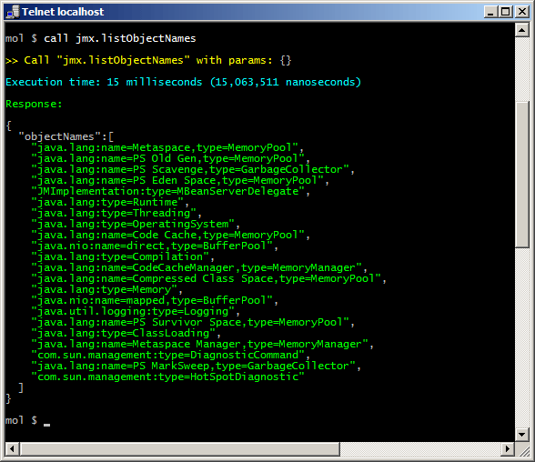
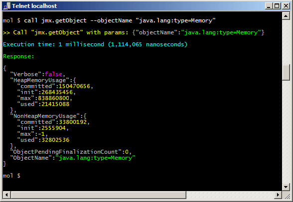
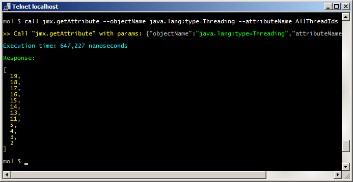
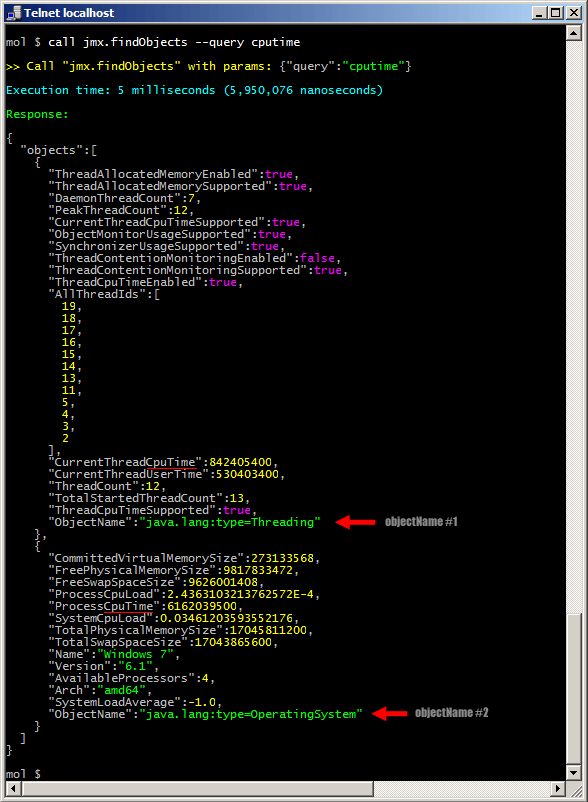

# About the JMX Service
The "jmx" Moleculer Service allows you to easily query the contents stored in a local or a remote JMX Registry. With this service Java and Node.js-based Moleculer nodes can easily query java-specific data (eg. JVM's memory usage, number of threads, or various statistical data - for example, JMX Service provides access to low-level statistics to Cassandra, Apache Kafka or Elasticsearch Servers).
The other advantage of the JMXService is that it can monitor objects in the JMX registry, and sends events about the changes. This events can be received by any node subscribed to this event, including Node.js-based nodes.
# Download
Maven
<dependencies>
<dependency>
<groupId>com.github.berkesa</groupId>
<artifactId>moleculer-java-jmx</artifactId>
<version>1.2.1</version>
</dependency>
</dependencies>
Gradle
dependencies {
implementation group: 'com.github.berkesa', name: 'moleculer-java-jmx', version: '1.2.1'
}
# Usage from code
ServiceBroker().builder()
.build()
.createService(new JmxService())
.start();
# Usage with Spring Framework
<?xml version="1.0" encoding="UTF-8"?>
<beans xmlns="http://www.springframework.org/schema/beans"
xmlns:xsi="http://www.w3.org/2001/XMLSchema-instance" xmlns:context="http://www.springframework.org/schema/context"
xsi:schemaLocation="http://www.springframework.org/schema/beans
http://www.springframework.org/schema/beans/spring-beans-3.0.xsd
http://www.springframework.org/schema/context
http://www.springframework.org/schema/context/spring-context-3.0.xsd">
<!-- ENABLE ANNOTATION PROCESSING -->
<context:annotation-config />
<!-- INSTALL USER-DEFINED MOLECULER SERVICES -->
<context:component-scan base-package="my.services" />
<!-- INSTALL JMX SERVICE -->
<bean id="jmx" class="services.moleculer.jmx.JmxService" />
<!-- SPRING REGISTRATOR FOR MOLECULER SERVICES -->
<bean id="registrator" class="services.moleculer.config.SpringRegistrator" depends-on="broker" />
<!-- SERVICE BROKER INSTANCE -->
<bean id="broker" class="services.moleculer.ServiceBroker" init-method="start" destroy-method="stop">
<constructor-arg ref="brokerConfig" />
</bean>
<!-- SERVICE BROKER SETTINGS -->
<bean id="brokerConfig" class="services.moleculer.config.ServiceBrokerConfig">
<property name="nodeID" value="node-1" />
</bean>
</beans>
# JMX Commands
# List object (MBean) names
Invoke from REPL console:
mol $ call jmx.listObjectNames --query memory
Invoke from Java code:
broker.call("jmx.listObjectNames").then(rsp -> {
for (Tree item: rsp.get("objectNames")) {
String objectName = item.asString();
}
});
Options
--query optional query string (eg. "memory" or "java.lang:*")
--sort sort list to alphanumeric order
Output

# Get object (entire MBean)
Invoke from REPL console:
mol $ call jmx.getObject --objectName "java.lang:type=Memory"
Invoke from Java code:
broker.call("jmx.getObject",
"objectName",
"java.lang:type=Memory").then(rsp -> {
logger.info("Usage: " + rsp.get("HeapMemoryUsage.used", 0L));
});
Options
--objectName name of the MBean (eg. "java.lang:type=Memory")
--sort sort attributes to alphanumeric order
Output

# Get attribute
Invoke from REPL console:
mol $ call jmx.getAttribute --objectName java.lang:type=Threading
--attributeName AllThreadIds
Invoke from Java code:
broker.call("jmx.getAttribute",
"objectName",
"java.lang:type=Threading",
"attributeName",
"AllThreadIds").then(rsp -> {
for (Tree item: rsp) {
logger.info("Thread ID: " + item.asLong());
}
});
Options
--objectName name of the MBean (eg. "java.lang:type=Runtime")
--attributeName attribute name (eg. "HeapMemoryUsage")
--path one property of the composite attribute (eg. "used")
--sort sort properties to alphanumeric order
Output

# Find objects by a query string
Invoke from REPL console:
mol $ call jmx.findObjects --query cputime
Invoke from Java code:
broker.call("jmx.findObjects",
"query",
"cputime").then(rsp -> {
for (Tree item: rsp.get("objects")) {
logger.info("Object name: " + item.get("ObjectName", "unknown"));
}
});
Options
--query query String (eg. "cputime" or "java.lang:*")
--max max number of retrieved objects (default is 64)
--sort sort attributes to alphanumeric order
Output
